Senhor Administrador de Fundo de Investimento, Gestor e Auditor Independente,
1. O objetivo deste Ofício Circular é fornecer orientações e esclarecimentos sobre a aplicação dos critérios contábeis dispostos nas Instruções CVM 489, 516, 577 e 579, em face das mudanças estruturais trazidas pela Resolução CVM 175/22, em relação à constituição e funcionamento dos fundos de investimentos.
2. A Lei nº 13.874/19 alterou o Código Civil (Lei nº 10.406/02), assegurando, dentre outras mudanças, a possibilidade de constituição de fundos de investimento com classes de cotas com direitos e obrigações distintas, havendo a permissibilidade de instituição de patrimônio segregado para cada classe de cotas. Nesse sentido, a Lei também estabeleceu que cada patrimônio segregado responderá, exclusivamente, por obrigações vinculadas à respectiva classe.
3. Na regulamentação dos dispositivos da Lei 13.874/19, que se relacionam aos fundos de investimento, a CVM editou a Resolução CVM nº 175, prevendo que, no caso de constituição de fundos de investimento com classes de cotas com direitos e obrigações distintos, o administrador deverá constituir patrimônio segregado para cada classe. A respectiva Resolução vetou a vinculação de parcela do patrimônio de uma classe de cotas a qualquer subclasse.
4. Além disso, a Resolução CVM 175, em seus artigos 66 a 69 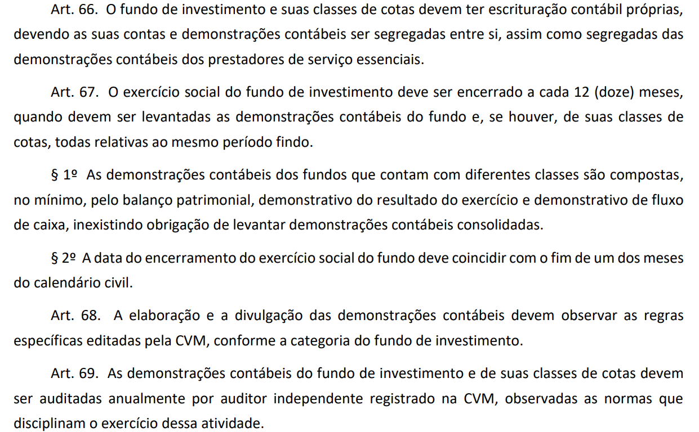 , apresentou algumas determinações sobre a elaboração das demonstrações contábeis e a realização dos serviços de auditoria. O art. 66 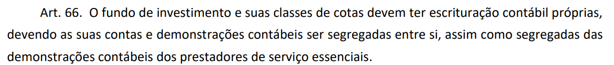 estabelece que o fundo de investimento e suas classes de cotas devem ter escrituração contábil próprias, devendo haver segregação das contas e das demonstrações contábeis; o parágrafo 1º do art. 67 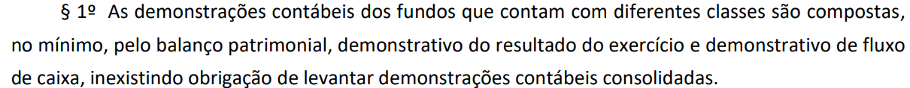 estabelece que as demonstrações contábeis dos fundos, que contam com diferentes classes de cotas, são compostas, no mínimo, pelo balanço patrimonial, demonstração do resultado do exercício e pela demonstração do fluxo de caixa, inexistindo obrigação de elaborar demonstrações consolidadas; o art. 68 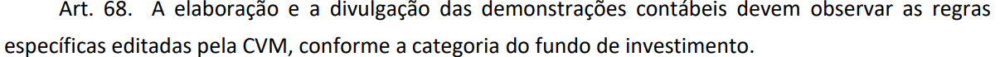 determina que a elaboração e a divulgação das demonstrações contábeis devem observar as regras específicas editadas pela CVM, conforme cada categoria de fundo de investimento; e art. 69
 determina que as demonstrações contábeis dos fundos de
investimento e de suas classes de cotas devem ser auditadas por auditor
independente registrado na CVM.
determina que as demonstrações contábeis dos fundos de
investimento e de suas classes de cotas devem ser auditadas por auditor
independente registrado na CVM. 5. A Superintendência de Normas Contábeis e de Auditoria (SNC) recebeu consulta da Associação Brasileira das Entidades do Mercado Financeiro e de Capitais (ANBIMA), na qual constam dúvidas adicionais e específicas sobre questões contábeis relacionadas aos critérios trazidos pela Resolução CVM 175 vis-à-vis as normas contábeis atualmente vigentes para os fundos de investimento. É importante destacar que algumas questões de matéria contábil foram anteriormente tratadas no Relatório de Audiência Pública SDM 08/20, elaborado pela Superintendência de Desenvolvimento de Normas (SDM), e nos Ofícios Circulares emitidos pela Superintendência de Supervisão de Investidores Institucionais (SIN) e pela Superintendência de Securitização e Agronegócio (SSE).
6. Para facilitar as orientações e o adequado entendimento a ser dado sobre as dúvidas elencadas, optou-se por se reproduzir aqui tais questões, de forma a dar tratamento direcionado.
A regra geral da RCVM 175 dispõe, em seu Art. 67
 , sobre as demonstrações
contábeis dos fundos que possuem diferentes classes. Considerando o
exposto na regra, existe a indicação de uma nova obrigação na
apresentação das demonstrações financeiras dos fundos, que é o fluxo de
caixa. Sobre este tema, entendemos que será possível manter o atual
modelo de demonstração financeira, conforme disposto na ICVM 577
(COFI), até que nova norma seja editada com o modelo do demonstrativo
de fluxo de caixa exigido. Este entendimento está correto? Ainda,
entendemos que tal obrigatoriedade é válida somente para os fundos que
contarem com múltiplas classes em sua estrutura. Este entendimento está
correto?
, sobre as demonstrações
contábeis dos fundos que possuem diferentes classes. Considerando o
exposto na regra, existe a indicação de uma nova obrigação na
apresentação das demonstrações financeiras dos fundos, que é o fluxo de
caixa. Sobre este tema, entendemos que será possível manter o atual
modelo de demonstração financeira, conforme disposto na ICVM 577
(COFI), até que nova norma seja editada com o modelo do demonstrativo
de fluxo de caixa exigido. Este entendimento está correto? Ainda,
entendemos que tal obrigatoriedade é válida somente para os fundos que
contarem com múltiplas classes em sua estrutura. Este entendimento está
correto? 7. É importante destacar que as Instruções CVM 489, 516, 577 e 579, atualmente, regulam matéria contábil aplicável aos fundos de investimento por elas regidos, e, com o advento da Resolução CVM 175, haverá a migração dessa regulação contábil para as diferentes classes de cotas existentes no fundo, em função delas contarem com patrimônio segregado, sendo, portanto, entidades de reporte para fins de aplicação das respectivas Instruções. Ou seja, nos fundos com diferentes classes de cotas, cada classe de cota será uma entidade de reporte, para fins de aplicação das normas de referência, incluindo elaboração e divulgação de demonstrações financeiras específicas para cada classe. Isso também deve ser adotado para os fundos com classe única, que, por não terem classes distintas, ficam circunscritos a elaboração de um conjunto único de demonstrativos contábeis, como atualmente é feito.
8. Em relação à aplicação dos critérios da ICVM 577, especificamente sobre o item 1.3.1.2.III.a, que estipula um conjunto diferente de demonstrativos contábeis a serem elaborados e apresentados, quais sejam, o Demonstrativo da Composição e Diversificação da Carteira (Documento nº 3), Demonstração da Evolução do Patrimônio Líquido (Documento nº 4) e notas explicativas, entende-se que esse conjunto de demonstrativos contábeis deverão ser apresentados pelas diferentes classes de cotas de um fundo, assim como pelo fundo com uma única classe. Em relação ao conjunto de demonstrações contábeis do fundo “casca”, que possua diferentes classes de cotas, este deverá seguir, quando aplicável, o que determina o 1º do art. 67
 da RCVM 175. Esse entendimento também deve ser aplicado para os
fundos do Anexo Normativo II, III e IV, cujas classes de cotas seguirão,
respectivamente, as Instruções CVM 489, 516 e 579, ficando a apresentação das
demonstrações contábeis dos fundos “casca” restritas ao que dispõe o
1º do art. 67
da RCVM 175.
da RCVM 175. Esse entendimento também deve ser aplicado para os
fundos do Anexo Normativo II, III e IV, cujas classes de cotas seguirão,
respectivamente, as Instruções CVM 489, 516 e 579, ficando a apresentação das
demonstrações contábeis dos fundos “casca” restritas ao que dispõe o
1º do art. 67
da RCVM 175.Considerando a inclusão do fluxo de caixa nas demonstrações financeiras, entendemos que será possível manter o atual modelo de DF, conforme disposto nas atuais regras contábeis, incluindo apenas o demonstrativo de fluxo de caixa. Esse entendimento está correto ou a CVM disponibilizará novos modelos?
9. Para fins dos fundos (assim como suas diferentes classes de cotas) regidos pelas Instruções CVM 489, 516, 579, pelo fato dessas Instruções já preverem a elaboração e divulgação da Demonstração de Fluxo de Caixa, ficam mantidos os critérios das respectivas Instruções atualmente adotados, devendo ser aplicados às diferentes classes de cotas, além dos fundos, na vigência da Resolução CVM 175. No caso dos fundos (e suas diferentes classes de cotas) regidos pela ICVM 577, verificar resposta no item 8.
O relatório de audiência pública da AP 08/20 apresenta, em seu item 3.8, maiores detalhes sobre as demonstrações contábeis considerando a nova regra e a nova estrutura dos fundos. Considerando o disposto no referido relatório, entendemos que a inclusão do fluxo de caixa deverá ocorrer apenas para os fundos que tiverem seus exercícios iniciados a partir de 01/10/2024. Este entendimento está correto?
10. O atual parágrafo 2º do art. 140 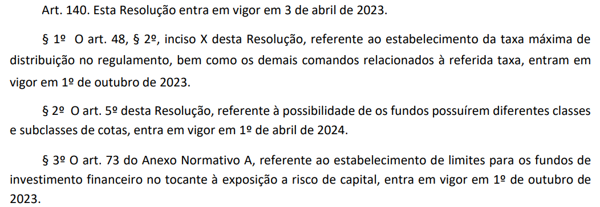 da Resolução CVM 175 determina que a aplicação do art. 5º da resolução (possibilidade de os fundos possuírem diferentes classes e subclasses de cotas), entra em vigor em 1º de outubro de 2024. Assim, a aplicação do parágrafo 1º do art. 67 da Resolução CVM 175 deve ser observado para os fundos com diferentes classes de cotas que venham a ser constituídos ou adaptados a partir de 1º de outubro de 2024, observada a resposta no item 8.
Qual a estrutura mínima esperada para apresentação das demonstrações contábeis do fundo? Devemos considerar os mesmos modelos de relatórios e relação de notas explicativas mencionadas nas normas de cada categoria de fundo? Em nosso entendimento, considerando que as normas contábeis (Instruções CVM 489, 516, 577 e 579) não foram revogadas, a estrutura das demonstrações contábeis são aquelas elencadas nos referidos normativos.
11. Em relação às demonstrações contábeis dos fundos e de suas classes de cotas, devem ser observados os critérios atuais existentes nas normas contábeis específicas, levando-se em consideração a materialidade dos eventos a serem tratados, observando-se a resposta no item 8.
Conforme disposto no Ofício Circular CVM/SIN/SSE 01/23, pergunta 25, os pagamentos das taxas podem ser feitos diretamente pelas classes ou subclasses dos fundos. Não transitando nenhum recurso pela conta do fundo, incluindo a taxa de fiscalização da CVM, haveria necessidade de elaboração de demonstrações financeiras e auditoria do fundo casca?
12. A Lei 14.754/23 prevê o seguinte em seu art. 37:
Art. 37. Nos casos em que o regulamento do fundo de investimento previr diferentes classes de cotas, com direitos e obrigações distintos e patrimônio segregado para cada classe, nos termos do inciso III do caput do art. 1.368-D da Lei nº 10.406, de 10 de janeiro de 2002 (Código Civil), observada a regulamentação da Comissão de Valores Mobiliários, cada classe de cotas será considerada como um fundo de investimento para fins de aplicação das regras de tributação previstas na legislação.
13. Dessa forma, entendemos que a referida Lei equipara as classes de cotas aos fundos de investimento, no que se refere a aplicação das regras de tributação previstas na legislação, significando que, para fins de apuração e pagamento do referido tributo, cada classe de cotas será tratada como um fundo de investimento. Assim, o pagamento da taxa de fiscalização deverá ser realizado por cada classe de cotas separadamente, de acordo com seu patrimônio líquido.
14. Respeitados os procedimentos estabelecidos nas normas contábeis aplicáveis, em específico o princípio da entidade, assim como o previsto no inciso III, do art.1368-D da Lei 10.406/02 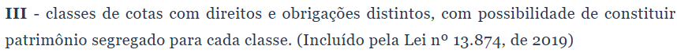 , para as classes de cotas, se não houver o trânsito de recursos pelo fundo e não havendo a existência de nenhum ativo, passivo ou resultado a ele atribuído, entendemos não fazer sentido a apresentação de demonstrações financeiras do fundo, mesmo porque, nessa situação, não haverá nenhum valor a ser apresentado.
15. Cabe ressaltar que, na forma do art. 117 da RCVM 175/22 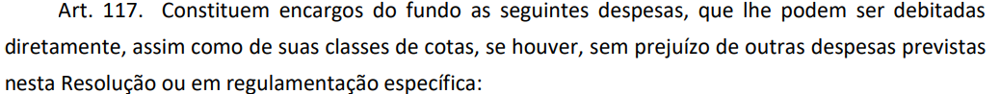 , as despesas elencadas no referido artigo constituem encargos do fundo quando o fundo for constituído com classe única, devendo a leitura ser aplicada às classes de cotas, quando fundo constituído com diferentes classes, em respeito ao princípio de segregação patrimonial, com direitos e obrigações distintos.
De acordo com o Art. 5 da regra geral da RCVM 175
 , as classes de um
fundo possuem direitos e obrigações distintos entre si. Além disso, os
patrimônios das classes existentes de baixo de um mesmo fundo são
segregados e, portanto, não há qualquer tipo de comunicação entre os
ativos das eventuais diferentes classes de um mesmo fundo.
, as classes de um
fundo possuem direitos e obrigações distintos entre si. Além disso, os
patrimônios das classes existentes de baixo de um mesmo fundo são
segregados e, portanto, não há qualquer tipo de comunicação entre os
ativos das eventuais diferentes classes de um mesmo fundo. Nesse sentido, entendemos que o processo de elaboração das Demonstrações Contábeis, bem como revisão e auditoria, ocorre de forma segregada e independente (exemplo: caso a demonstração financeira de uma classe específica sofra algum tipo de ressalva ou abstenção de opinião entendemos que tal parecer não afetaria a demonstração financeira das demais classes). Este entendimento está correto? Ou seja, é correto afirmar que a auditoria de uma classe não impede ou beneficia o andamento do processo de auditoria de outra classe, bem como o processo de auditoria do próprio fundo (se necessário)?
16. Conforme §2º do art. 5º da parte geral da Res. 175 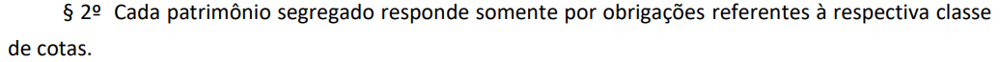 , “cada patrimônio segregado responde somente por obrigações referentes à respectiva classe de cotas”. O processo de elaboração, revisão e auditoria das demonstrações financeiras deve ocorrer de forma segregada e independente nas classes de um mesmo fundo, assim como no próprio fundo que tiver mais de uma classe, quando aplicável. A princípio, uma opinião modificada do auditor sobre as demonstrações contábeis de uma classe não deveria influenciar a opinião sobre as demonstrações das demais classes do mesmo fundo ou sobre a do fundo, exceto, por exemplo, na situação de falhas no sistema de controle (por exemplo, alocação de despesas) do administrador que poderia afetar, de forma generalizada, o patrimônio das demais classes e fundos por ele administrados.
Entendemos que nas Demonstrações Financeiras das classes serão incluídas apenas uma nota explicativa demonstrando em tabelas as principais informações contábeis das subclasses (por exemplo: movimentação do PL, Cota, Rentabilidade, benchmark e os valores dos encargos debitados nas carteiras de cada subclasse), e que as demais informações estarão demonstradas em cada suplemento do regulamento do Fundo. Este entendimento está correto?
17. É relevante citar a necessidade de escrituração contábil adequada que permita segregar os encargos debitados em cada subclasse, de forma a se apurar a movimentação do PL, valor da cota de cada subclasse e a respectiva rentabilidade. Essas informações podem ser apresentadas no corpo de cada demonstrativo contábil a ser apresentado ou divulgadas em NE, da forma como descrito pelo participante.
Como funcionará a comparabilidade entre exercícios sociais nas demonstrações financeiras a partir da entrada em vigor da RCVM 175?
18. Considerando que os critérios contábeis requeridos pelas Instruções específicas não foram alterados, não há que se falar em dispensa na apresentação de informação comparativa. A não apresentação de informação comparativa se dará quando da criação de diferentes classes de cotas (ou fundo), na adoção da RCVM 175, em função de não haver informação do período anterior à adoção da RCVM 175. Para os fundos existentes anteriormente à entrada em vigor da RCVM 175, que passaram a ser representados por classe única ou que tenham sido transformados em classe de cotas de outro fundo, não há razão para que a comparabilidade seja dispensada.
O Art. 121 da regra geral da RCVM 175 prevê que nos casos de eventos societários deverão ser enviadas uma série de documentos à CVM “por meio de sistema disponível na rede mundial de computadores”. Para os FIPs e FIFs, ainda não existe campo para inclusão destas demonstrações financeiras específicas – para os FIFs, existe apenas a recente criação da possibilidade de upload da demonstração financeira de encerramento. Há expectativa de liberação dessas funcionalidades para upload de demonstrações financeiras de todos os eventos para todos os tipos de Fundos?
19. Ainda não há previsão para a disponibilização de tal ferramenta. Enquanto não forem colocadas em produção, os administradores de fundos deverão manter tais demonstrações arquivadas e à disposição da fiscalização da CVM, quando solicitado.
A CVM entende que existirá alguma diferença na elaboração do balancete de classes que possuam uma subclasse, daquele de classes que possuem mais de uma subclasse (ex.: informações sobre taxas, entre outros)?
20. Não há que se falar em posição patrimonial e financeira de subclasses, pois a regulação adotou como conceito da estrutura das subclasses um arranjo interno adotado para a segregação dos cotistas de uma dada classe, e assim, não havendo segregação de patrimônio ao nível da subclasse. Conforme disposto no Ofício Circular CVM/SIN/SSE 01/23, pergunta 15, não será mais exigida do fundo casca a demonstração de evolução do patrimônio líquido. Tal entendimento começa a valer a partir dos exercícios iniciados em 10/2024 ou para os prazos de envio a partir de 10/2024?
21. Como cada classe de cotas terá direitos e obrigações distintos e contará com patrimônio segregado, não faz sentido a referida demonstração ser apresentada para o fundo “casca”, considerando que o parágrafo 1º do Art. 67 da RCVM 175 não exige a obrigação de elaboração de demonstrações consolidadas. Como respondido no item 10, a vigência de estruturação de fundos com classes de cotas distintas está estipulada no atual parágrafo 2º do art. 140 (1º de outubro de 2024) . Dessa forma, tal entendimento começará a ser adotado a partir dos períodos iniciados em, ou após, essa data.
Na demonstração de evolução do patrimônio líquido das classes será necessária a abertura das informações das subclasses?
22. Entendemos que tal informação é relevante para os cotistas das diferentes subclasses, podendo ser apresentado no corpo do demonstrativo contábil ou como informação a ser incluída em nota explicativa, como comentado no item 17.
Em relação ao balancete mensal existe a expectativa de apresentação de um novo layout para o atual CADOC 4010 por parte da CVM? Se sim, a partir de qual mês de competência será exigido?
23. Não há previsão para a alteração do layout no referido documento. O atual padrão deve ser adotado como referência para a prestação das informações regulatórias exigidas pelo novo regime. Se houver dúvidas na prestação das informações relativas ao novo regime com a estrutura atual do documento, as superintendências competentes estão à disposição para esclarecer como tais informações poderão ser prestadas no documento.
Entendemos que não será necessária a realização de auditoria em casos de incorporação no processo de transformação das atuais estruturas master/feeder em classes/subclasses, uma vez que os eventos serão realizados por força da adaptação à nova norma. Este entendimento está correto?
24. Nos casos de adaptação da atual estrutura master/feeder para a estrutura classes/subclasses, onde o fundo master será convertido em classe e os fundos feeders serão as subclasses dessa classe, entendemos que não haverá a incorporação de patrimônio líquido/unificação de cotistas, mas simplesmente a conversão dele em classe, não sendo necessário, a nosso ver, a realização de auditoria nesse procedimento. Nessa situação específica, o fundo master (que passará a ser classe) deverá continuar a apresentar demonstrações financeiras comparativas, considerando a data de conversão da estrutura. Em relação aos fundos feeders (que passarão a ser subclasses da classe), pelo fato de as subclasses não possuírem segregação patrimonial e não serem entidades de reporte para fins da aplicação das normas contábeis, entendemos que as demonstrações financeiras dos fundos feeders deixarão de ser apresentadas a partir da data de conversão da estrutura. Um exemplo desta possibilidade seria um fundo master com quatro fundos feeders sendo convertidos para uma classe de cotas com quatro subclasses vinculadas.
25. Ressaltamos também que não é necessária a elaboração de demonstração contábil de encerramento para os Fundos cujos CNPJs serão cancelados, desde que sejam incluídas em nota explicativa específica informações úteis e suficientes para que o investidor consiga entender, de forma clara, o processo de migração ocorrido, seja ela de fundo master para classe de cotas ou fundo feeder para subclasse.
26. No entanto, é bom ressaltar, na ocorrência de qualquer evento de incorporação ou cisão de patrimônios, seja ele em função da adaptação à RCVM 175 ou não, será necessária a realização de auditoria, conforme parametrizado na ICVM 577. Um exemplo desta possibilidade seria dois fundos feeders que se transformam em uma só subclasse vinculado a um mesmo master ou a incorporação de dois feeders vinculados a dois masters diferentes.
Entendemos que as Demonstrações Financeiras elaboradas conforme a RCVM 175 serão exigidas a partir dos exercícios sociais iniciados após 01/10/2024, tanto para exercício social quanto para eventos societários. Este entendimento está correto?
27. Sim, a mudança estrutural de funcionamento está estabelecida diante da possibilidade do fundo poder ser constituído por diferentes classes de cotas, cuja vigência, conforme já mencionado anteriormente, se dará de acordo com o parágrafo 2º do art. 140 da RCVM 175 (1º de outubro de 2024). Assim, a elaboração das demonstrações contábeis para refletir essa nova estrutura deverá ser observada a partir da vigência do parágrafo 2º do art. 140 da RCVM 175 .
Considerando o disposto no relatório de análise da audiência pública da AP 08/20, item 3.8 é mencionado que as escriturações contábeis da classe deverão permitir registrar os passivos de cada subclasse em separado. Nesse sentido, gostaríamos de entender se o termo “passivo” se refere às movimentações do patrimônio líquido (posições de cotistas) ou inclui qualquer movimentação nas obrigações e provisionamentos da subclasse (passivo contábil)?
28. Conforme item 17 há a necessidade de escrituração contábil adequada que permita segregar e demonstrar os encargos debitados de cada subclasse e a movimentação do PL. Nesse sentido, o termo “passivo” utilizado no referido relatório de AP SDM 08/20 deve ser entendido neste contexto.
Em qual cenário se aplica o prazo máximo de 120 dias previsto no item VI do Art. 121 da regra geral da RCVM 175, uma vez que as Demonstrações Contábeis devem ser auditadas no prazo máximo de 90 dias, conforme Art. 120 também da regra geral da RCVM 175?
29. O art. 120
 determina que as demonstrações contábeis de cada classe de cotas
objeto de cisão, incorporação, fusão, transferência de administração ou
transformação de categoria, levantadas na data da operação, devem ser auditadas,
no prazo máximo de 90 dias, contado da data da efetivação do evento. Já
o art. 121
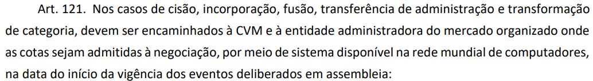
determina que essas demonstrações contábeis auditadas devem ser encaminhadas
à CVM e à entidade administradora do mercado organizado onde as cotas sejam
admitidas à negociação no prazo máximo de 120 dias, contados da data da
efetivação dos eventos mencionados. Ou seja, considerando a data de efetivação
dos eventos mencionados, as demonstrações contábeis devem ser auditadas em até
90 dias e entregues em até 120 dias.
determina que as demonstrações contábeis de cada classe de cotas
objeto de cisão, incorporação, fusão, transferência de administração ou
transformação de categoria, levantadas na data da operação, devem ser auditadas,
no prazo máximo de 90 dias, contado da data da efetivação do evento. Já
o art. 121
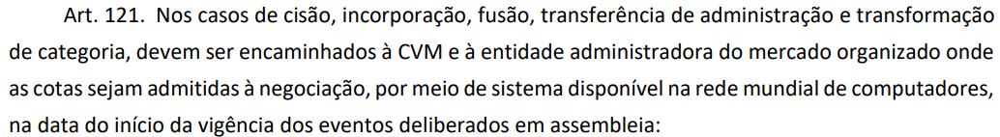
determina que essas demonstrações contábeis auditadas devem ser encaminhadas
à CVM e à entidade administradora do mercado organizado onde as cotas sejam
admitidas à negociação no prazo máximo de 120 dias, contados da data da
efetivação dos eventos mencionados. Ou seja, considerando a data de efetivação
dos eventos mencionados, as demonstrações contábeis devem ser auditadas em até
90 dias e entregues em até 120 dias. Considerando o disposto na pergunta 10 do Ofício Circular CVM/SIN/SSE 01/23, gostaríamos de confirmar: como se dará o funcionamento da contabilização do envio do dinheiro/ recurso da classe para o pagamento de eventuais taxas da subclasse? 30. Conforme já mencionado nos itens 17 e 28, deverá haver escrituração contábil adequada que permita segregar e demonstrar os encargos debitados a cada subclasse e a movimentação do PL.
31. Como a subclasse não representa um patrimônio segregado, estando vinculada necessariamente a uma classe de cotas, o registro da despesa se dará no patrimônio correspondente a essa classe de cotas ao qual a subclasse está vinculada (como encargo específico da subclasse).
Atualmente, na ICVM 577, temos o disposto abaixo. Considerando que a classe de cotas é um arranjo de organização de ativos, podemos entender que o controle abaixo será descontinuado? Para classes com somente uma subclasse de cotas, este controle ainda deverá ser utilizado?
Título: MOVIMENTAÇÃO DE COTAS – CONTROLE 9.0.9.17.00-0
Emissões 9.0.9.17.05-5
Resgates 9.0.9.17.10-3
Circulação 9.0.9.17.15-8
Função: Registrar o valor das cotas emitidas, resgatadas e em circulação do fundo.
32. A classe de cotas é um patrimônio segregado e como estamos tratando de emissões de “cotas” dentro desse patrimônio, o controle deve ser efetuado no nível dessas classes de cotas.
Ainda sobre as notas explicativas das classes, deverão ser detalhadas as despesas específicas de cada subclasse? E na nota de transações com partes relacionadas, que nível de detalhes poderá ser exigido das taxas das subclasses, caso haja?
33. No que se refere a possibilidade de detalhamento das informações nas notas explicativas, ver item 17.
34. Em relação a segunda indagação, conforme comentado no item 20, a regulação adotou como conceito da estrutura das subclasses um arranjo interno adotado para a segregação dos cotistas de uma dada classe, e assim, não havendo segregação de patrimônio ao nível da subclasse. Portanto, não faz sentido considerar as subclasses como “transações com partes relacionadas”, pois as subclasses são parte integrante das classes de cotas as quais se referem.
Nas ressalvas do Art. 63
 da regra geral da RCVM 175, podemos considerar
os casos de envio de informações diretamente a auditores externos de
fundos cotistas, conforme solicitações enviadas por seus administradores
ao administrador do fundo investido?
da regra geral da RCVM 175, podemos considerar
os casos de envio de informações diretamente a auditores externos de
fundos cotistas, conforme solicitações enviadas por seus administradores
ao administrador do fundo investido? Adicionalmente, atualmente temos muitas ressalvas ou mesmo abstenção de opinião no parecer de auditoria nos casos em que o fundo investido tem uma defasagem entre o exercício do Fundo objeto de auditoria e os fundos investidos.
35. O envio de informações ao auditor externo do fundo investidor pode ser considerado dentre as ressalvas previstas no art. 63 da RCVM 175
, que apesar de
não ser o auditor externo do próprio fundo, é auditor do fundo investidor, sendo
considerado, portanto, dentro do conceito de prestador de serviço. Além disso, as
informações que o auditor externo obtém, no âmbito da execução de seu trabalho,
estão cobertas pelo sigilo profissional do auditor, conforme normas profissionais
aplicáveis.36. Em relação à ressalva no relatório do auditor sobre a defasagem de exercício do fundo objeto de auditoria e do fundo investido, há uma lógica nesse procedimento, para garantir que a informação reportada no fundo investidor não esteja defasada e, dessa forma, represente adequadamente a posição financeira do fundo naquela data de reporte. Nesse sentido, essa questão deve ser levada em consideração quando da realização de investimento em outro fundo, com data de reporte com certa defasagem em relação ao fundo investidor.
37. Ressaltamos, entretanto, que o fato de a data-base do fundo investido ser diferente da data-base do fundo investidor não enseja, por si só, motivo de ressalva. O auditor pode obter evidências de auditoria complementares sobre o período posterior às últimas demonstrações financeiras auditadas do fundo investido, adicionalmente aos demais procedimentos de auditoria requeridos. Essas evidências devem ser fornecidas pelo Administrador do fundo investidor, enquanto responsável pela adequada elaboração das demonstrações contábeis, contando com a devida participação ativa dos gestores dos fundos envolvidos. Ou seja, para reportar corretamente o valor dos investimentos em fundos, o Administrador deve obter o conforto necessário sobre o patrimônio líquido dos fundos investidos e, assim, prover o auditor com as informações necessárias para que este possa formar a sua opinião.Entendemos que manter atualizados e em perfeita ordem os registros contábeis referentes às operações e ao patrimônio líquido do fundo faz parte do dever de diligência do Administrador ( art. 104 da parte geral da RCVM 175
 ) e que uma ressalva
ou abstenção na opinião de auditoria em relação às demonstrações
financeiras do fundo pode indicar uma falha grave do Administrador em
relação a tal dever.
) e que uma ressalva
ou abstenção na opinião de auditoria em relação às demonstrações
financeiras do fundo pode indicar uma falha grave do Administrador em
relação a tal dever.Como irá funcionar o rodízio de Auditores Independentes entre as classes de um mesmo fundo, bem como do próprio fundo (se necessário)? O fundo poderá ter diferentes prestadores de serviços de Auditoria Independente em suas classes? Será feita alguma mudança no prazo de 5 anos para rotação desse prestador de serviços?
38. A regra em relação ao rodízio de auditores está mantida e seguirá conforme o estipulado na RCVM 23/21. Poderá ser contratado um único auditor para todas as classes ou auditores diferentes, a depender da definição da instituição administradora.
Considerando que as classes terão seus ativos, passivos e patrimônios segregados, o exercício social das diferentes classes de um mesmo fundo poderá ser encerrado em meses distintos?
39. O art. 67 da RCVM 175 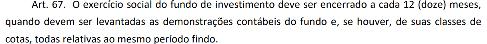 determina que “o exercício social do fundo de investimento deve ser encerrado a cada 12 (doze) meses, quando devem ser levantadas as demonstrações contábeis do fundo e, se houver, de suas classes de cotas, todas relativas ao mesmo período findo” (grifos nossos). Dessa forma, com base na atual redação do art. 67, entendemos que o exercício social de todas as classes de cotas de um mesmo fundo deve abranger o mesmo período findo.
Conforme respondido no Ofício Circular CVM/SIN/SSE 01/23, perguntas 61, 75 e 76, está prevista a atualização da ICVM 577 para adequação aos novos conceitos previstos na RCVM 175. A CVM possui prazo para que a atualização da ICVM 577 aconteça? E quanto a atualização das demais regras contábeis (FIDC, FII e FIP), há previsão para serem realizadas?
41. Conforme já mencionado, a principal alteração proveniente da RCVM 175, para aplicação das normas contábeis, se refere à alteração da entidade que reporta, que passa a ser as classes de cotas, por representarem patrimônios segregados. Assim, os critérios contábeis de reconhecimento, mensuração e apresentação dos ativos e passivos serão avaliados no nível das classes de cotas, de acordo com os eventos econômicos que as impactem. Esses critérios são os mesmos, sejam aplicados aos fundos ou às classes de cotas. A apresentação de demonstrações contábeis para essas classes de cotas também deve seguir o que estiver definido nas normas contábeis aplicáveis, enquanto não alteradas (ICVM 489, 516, 577 e 579).
42. Com relação as demonstrações contábeis dos fundos com diferentes classes de cotas, deve ser seguido o estabelecido no parágrafo 1º do art. 67 da RCVM 175 . A diferença, com a adoção da RCVM 175, é que as operações irão estar no nível das classes de cotas e não no fundo. Assim, os eventos econômicos a serem retratados nos fundos são aqueles que os impactem. A informação reportada será tão simples quanto forem os eventos econômicos a serem reportados ou até inexistente. 43. Em relação ao elenco de contas disponível da ICVM 577 para os fundos de investimento financeiro (incluindo-se as diferentes classes de cotas), pode-se realizar abertura de subcontas internas nas atuais contas contábeis para o registro e controle necessário. Um exemplo, é o caso de classes de cotas com subclasses, cujos encargos deverão ser segregados e registrados nas subclasses específicas, para a correta apuração da movimentação do PL, do valor da cota de cada subclasse e da rentabilidade.